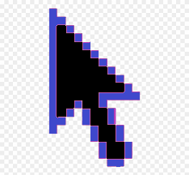

Lekce1 - část1- Obrázky
Vkládání obrázku

Mezera
Vlozeni obrazku, který neexstuje

Nebo se ten text nezobrazí, protože to každý prohlížeč dělá jinak. Třeba Safari
Tak na Safari to nefunguje :( Ale titulek se zdá funguje - jako nápověda (zobrazí se malé okýnko s tím textem, když je kurozr nad obrázekm), která se zobrazí ať už se obrázek načte nebo nenačte.
Obrázek jako odkaz

Úkoly
Nějaká random paragraf
- Vlož obrázek, který bude odkazovat na přechozí část.
- Uprav barvu pozadí a textu a zarovnej na střed všechny věci od nadpisu Úkoly (včetně) po nadpis Další zdroje.
Další zdroje
Předchozí část
hlavní stránka
Další část